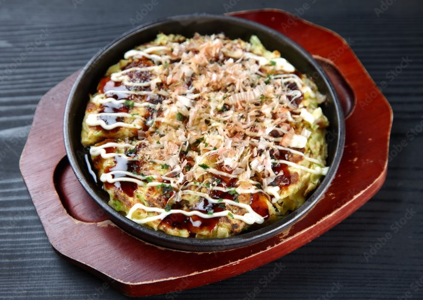
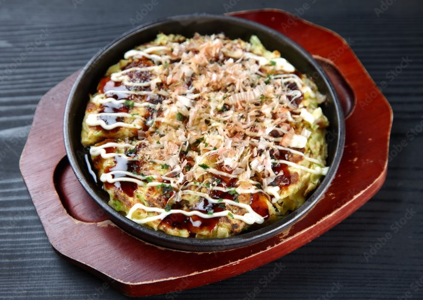

Makanan Jepang: Kuliner Tradisional yang Menggugah Selera
Salah satu hal terbaik dari berkunjung ke Jepang adalah kesempatan untuk menikmati berbagai macam hidangan yang lezat dan unik. Kuliner Jepang sangat beragam, dengan berbagai cita rasa dan teknik masak yang sudah dipraktikkan selama berabad-abad.
- Sushi dan Sashimi: Ikon Makanan Jepang
- Ramen: Sup Mie yang Menghangatkan Jiwa
- Tonkotsu Ramen (dari Fukuoka): Menggunakan kaldu tulang babi yang kaya rasa.
- Shoyu Ramen (dari Tokyo): Dengan kuah berbasis kecap asin.
- Miso Ramen (dari Hokkaido): Menggunakan miso sebagai bahan dasar kuah.
- Makanan Jalanan: Takoyaki dan Okonomiyaki
- Wagyu: Daging Sapi Jepang Berkualitas Tinggi
Sushi dan sashimi adalah dua hidangan paling terkenal dari Jepang. Sushi terbuat dari nasi yang dibumbui dengan cuka dan disajikan dengan berbagai topping seperti ikan mentah, sayuran, atau telur. Sashimi, di sisi lain, adalah irisan ikan mentah segar yang disajikan tanpa nasi, namun disertai dengan kecap asin dan wasabi.
Ramen adalah salah satu comfort food paling populer di Jepang. Setiap daerah di Jepang memiliki variasi ramen yang berbeda. Beberapa jenis ramen terkenal termasuk :
 

Takoyaki, bola-bola adonan tepung berisi potongan gurita, adalah makanan jalanan yang sangat populer di Osaka. Sementara itu, okonomiyaki adalah pancake asin Jepang yang bisa diisi dengan berbagai bahan, mulai dari daging hingga sayuran, kemudian dipanggang di atas wajan datar.

Wagyu adalah daging sapi Jepang yang terkenal karena kelezatan dan teksturnya yang lembut. Salah satu jenis wagyu yang paling terkenal adalah Kobe Beef, yang dihargai karena pola marbling lemaknya yang sempurna, membuatnya lumer di mulut.